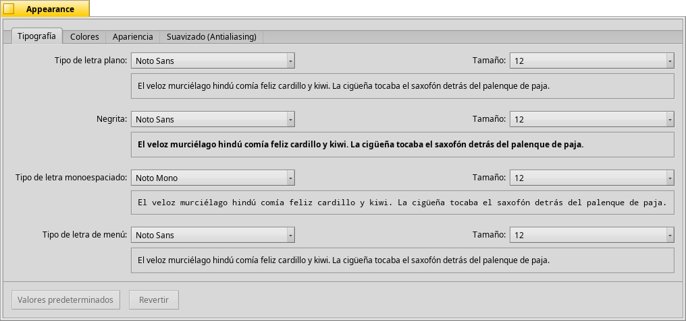
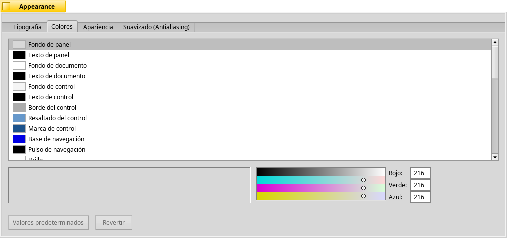

Español
Español Français
Français Deutsch
Deutsch Italiano
Italiano Русский
Русский Svenska
Svenska 日本語
日本語 Українська
Українська 中文 ［中文］
中文 ［中文］ Português
Português Suomi
Suomi Slovenčina
Slovenčina Magyar
Magyar Português (Brazil)
Português (Brazil) English
English Appearance
Appearance
| Deskbar: | ||
| Ubicación: | /boot/system/preferences/Appearance | |
| Configuración: | ~/config/settings/system/app_server/appearance ~/config/settings/system/app_server/decorator_settings ~/config/settings/system/app_server/fonts |
Preferencias de apariencia le permite cambiar agunos aspectos de visualización de Haiku.
 Fonts
Fonts

Haiku defines three standard fonts for different purposes. You set plain, bold and fixed font types and sizes that will be used throughout the system. Besides these, there's also a separate setting for the font used in menus.
Installing new fonts
You install new fonts by copying them into their respective user folder, i.e. /boot/common/data/fonts/ or /boot/home/config/data/fonts/ (see topic Filesystem layout).
Colores

In the tab, you can change the colors of different parts of the user interface. The color well accepts drag&drops from other programs, letting you drag colors over from e.g. WonderBrush, Icon-O-Matic or the Backgrounds panel.
Window decorators

Decorators determine the look and feel of windows and all GUI elements. Currently Haiku comes with only one default decorator. Should you find and install other decorators, you can choose a different one from the pop-up menu.
Antialias

The tab provides different settings for how things are rendered on screen.
Glyph hinting (Glifos insinuados)
Cuando se activa, se alinean todas las letras de tal manera que sus orillas vertical y horizontal descansan exactamente entre dos pixeles. El resultado es un contraste prefecto, especialmente cuando se trata con negro sobre blanco. El texto aparece más preciso. También hay una seleccion para ""; es especialmente útil para dispositivos de baja resolución como netbooks. Las fuentes pequeñas pueden verse muy mal cuando la definición adicional (hinting) está encendida, pero con esta selección puede todavía sacar ventaja de la definición adicional para editores de texto y la Terminal.
Vea la diferencia que la definición adicional hace con estas capturas de pantalla aumentadas:
 Definición adicional: apagada |  Definición adicional: encendida |
Debe señalarse que todas las ventanas Magnify (aumentadas) en esta página son por supuesto renderadas en sí mismas con las opciones diferentes también. Así que se puede obtener una impresión en el mundo real de las selecciones al comparar, por ejemplo, el título de la ficha amarilla en negrita o el texto "33 x 15 @ 8 pixels/pixel".
Tipos de Antialiasing
Otra técnica para mejorar el renderado es el Antialias, el cual soporta todos los gráficos de vector así como texto. Suaviza las líneas al cambiar el color de ciertos pixeles. Hay dos métodos para eso:
(escala de grises) cambia la intensidad de los pixeles en la orilla.
hace un mejor trabajo todavía, especialmente con monitores LCD (de alta resolución). En lugar de la intensidad de un pixel, cambia su color el cual mueve una orilla por una fracción de pixel, porque las pantallas LCD producen cada pixel con un componente rojo, verde y azul.
De nuevo, los dos métodos diferentes con capturas de pantalla aumentadas:
Escala de grises, definición adicional: apagada | Subpixel LCD, definición adicional: apagada |
El antialias basado en subpixel agrega un brillo ligeramente coloreado a los objetos. Algo que no todos toleran. En Haiku se pueden combinar los dos métodos de antialias y encontrar la selección adecuada al usar una guía de selección.
Si activa el suavizado adicional más el renderado de subpixel LCD cambiando archivos fuente y recompilando, así es como se ve, comparado al suavizado adicional con escala de grises:
Escala de grises, definición adicional: encendida | Subpixel de LCD, definición adicional: encendida |
Al fondo del panel hay dos botones:
| (predeterminado) regresa todo a los valores predeterminados. | ||
| Trae de vuelta las selecciones que estaban activas cuando se inició el cuadro de diálogo de preferencias Apariencia (Appearance). |